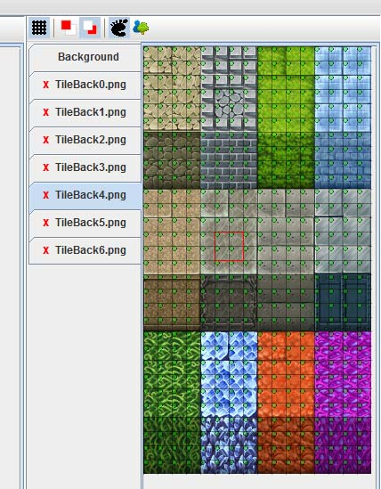
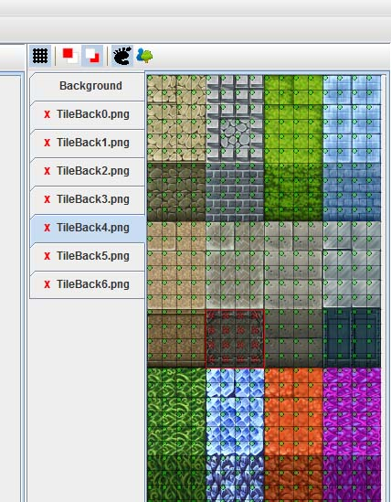
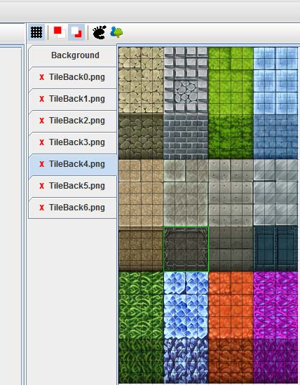
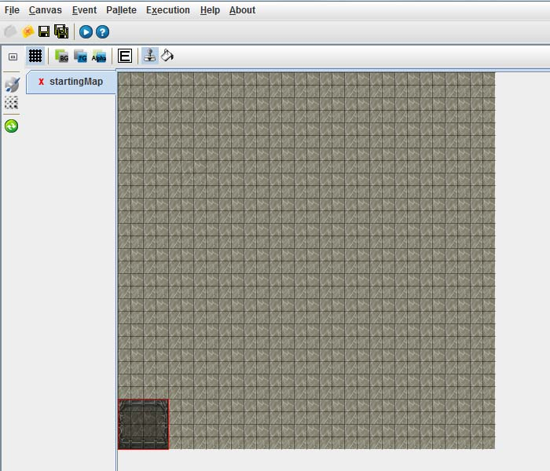
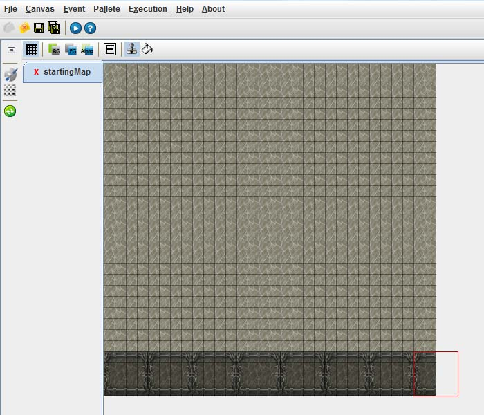

Step 2-2. 이동 불가 지역 설정
이번에는 계속해서 이동 할수 없는 곳을 그려보겠습니다.
기본적으로 타일셋을 그리면 전부 캐릭터가 이동이 가능합니다.
이동이 못하는 타일은 타일셋에서 설정을 해줘야합니다.
타일 셋에서 이동가능 버튼( )을 누르면 이동가능 설정 모드로 바뀝니다. )을 누르면 이동가능 설정 모드로 바뀝니다.

-이동가능 설정 모드
각 블록(=타일한칸) 마다 작게 초록색으로 O 가 표시되어있는 것이 보입니다.
이것은 그 블록이 이동이 가능하다는 것을 나타냅니다.
이동 불가능 지역으로 바꾸고 싶은 지역을 드래그 하여 선택해 봅시다.

- 16블록을 이동 불가 지역으로 설정
아래쪽 16블록을 드래그로 선택하였습니다. 초록색 O에서 붉은 X로 바뀐것을 확인 할수 있습니다.
이제 저 타일셋은 이동하지 못하는 지역으로 설정이 되었습니다.
이것 부분을 이제 맵에 그려 봅시다
이동가능 버튼()을 다시 클릭하여 이동가능 모드를 해제하고
이동이 불가능한 타일셋을 다시한번 선택하여 주도록 합니다.
주의: <이동가능>, <캐릭터보다 위 전경 선택 모드>에서는 캔버스에 그릴수 없습니다.
모드를 해제하고 다시 한번 타일셋에서 그리고자 하는 곳을 선택해 주셔야 합니다.

- 이동불가 지역인 16블록을 선택
이동가능 설정모드에서 16블록을 선택였다 하더라도, 다시 타일셋의 기본 모드로
돌아오면 그리고 싶은 구역을 꼭 다시 선택해 주도록 합니다.
이번에는 스탬프모드()를 이용하여 그려봅시다

- 스탬프 모드로 선택한 타일을 캔버스에 찍은 모습
스탬프 모드에서는 선택한 타일셋을 캔버스에 도장처럼 찍을 수가 있습니다.
왼쪽 아래 구석에 찍은 모습입니다. 이런식으로 아래 줄에 전부 그려넣어 보겠습니다.

- 스탬프를 찍은 후.
이렇게 하면 제일 아래 스탬으로 찍은 구역은 캐릭터로 이동하지 못하게 됩니다.
이러한 방식으로 조금 더 꾸며 보도록하겠습니다.

위쪽 벼과 아래쪽 절벽쪽은 이동 불가하며 가운데 바닥과 카펫트 위는 이동가능 지역으로
설정했습니다.
다음 2-3장에서는 전경을 배치해 보도록 하겠습니다.
|